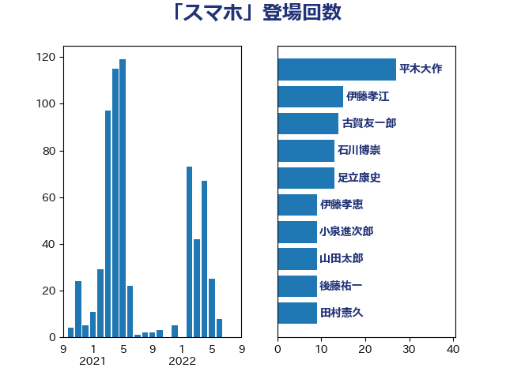

単語「スマホ」

| 平木大作 | 公明党 | 27 回 |
| 伊藤孝江 | 公明党 | 15 回 |
| 古賀友一郎 | 自由民主党 | 14 回 |
| 石川博崇 | 公明党 | 13 回 |
| 足立康史 | 日本維新の会 | 13 回 |
| 伊藤孝恵 | 国民民主党 | 9 回 |
| 小泉進次郎 | 自由民主党 | 9 回 |
| 山田太郎 | 自由民主党 | 9 回 |
| 後藤祐一 | 立憲民主党 | 9 回 |
| 田村憲久 | 自由民主党 | 9 回 |
| 國重徹 | 公明党 | 7 回 |
| 稲富修二 | 立憲民主党 | 7 回 |
| 古賀之士 | 立憲民主党 | 6 回 |
| 川田龍平 | 立憲民主党 | 6 回 |
| 平井卓也 | 自由民主党 | 6 回 |
| 田島麻衣子 | 立憲民主党 | 6 回 |
| 白石洋一 | 立憲民主党 | 6 回 |
| 萩生田光一 | 自由民主党 | 6 回 |
| 藤巻健太 | 日本維新の会 | 6 回 |
| 中川宏昌 | 公明党 | 5 回 |
| 堀井巌 | 自由民主党 | 5 回 |
| 安江伸夫 | 公明党 | 5 回 |
| 岡本あき子 | 立憲民主党 | 5 回 |
| 岸真紀子 | 立憲民主党 | 5 回 |
| 末松信介 | 自由民主党 | 5 回 |
| 東徹 | 日本維新の会 | 5 回 |
| 玉木雄一郎 | 国民民主党 | 5 回 |
| 福島みずほ | 社会民主党 | 5 回 |
| 阿部知子 | 立憲民主党 | 5 回 |
| 須藤元気 | 無所属 | 5 回 |
| 高橋千鶴子 | 日本共産党 | 5 回 |
| 川合孝典 | 国民民主党 | 4 回 |
| 森屋隆 | 立憲民主党 | 4 回 |
| 森山浩行 | 立憲民主党 | 4 回 |
| 河西宏一 | 公明党 | 4 回 |
| 緑川貴士 | 立憲民主党 | 4 回 |
| 菅義偉 | 自由民主党 | 4 回 |
| 藤岡隆雄 | 立憲民主党 | 4 回 |
| 金子恭之 | 自由民主党 | 4 回 |
| 世耕弘成 | 自由民主党 | 3 回 |
| 佐々木さやか | 公明党 | 3 回 |
| 北神圭朗 | 無所属 | 3 回 |
| 吉田久美子 | 公明党 | 3 回 |
| 本庄知史 | 立憲民主党 | 3 回 |
| 柳ヶ瀬裕文 | 日本維新の会 | 3 回 |
| 武田良太 | 自由民主党 | 3 回 |
| 浜田聡 | NHK党 | 3 回 |
| 竹内真二 | 公明党 | 3 回 |
| 竹谷とし子 | 公明党 | 3 回 |
| 落合貴之 | 立憲民主党 | 3 回 |
| 藤井比早之 | 自由民主党 | 3 回 |
| 鈴木義弘 | 国民民主党 | 3 回 |
| 門山宏哲 | 自由民主党 | 3 回 |
| 高橋光男 | 公明党 | 3 回 |
| 丹羽秀樹 | 自由民主党 | 2 回 |
| 古川元久 | 国民民主党 | 2 回 |
| 吉川元 | 立憲民主党 | 2 回 |
| 大西健介 | 立憲民主党 | 2 回 |
| 奥野総一郎 | 立憲民主党 | 2 回 |
| 小倉將信 | 自由民主党 | 2 回 |
| 山本香苗 | 公明党 | 2 回 |
| 岡本三成 | 公明党 | 2 回 |
| 平将明 | 自由民主党 | 2 回 |
| 平林晃 | 公明党 | 2 回 |
| 斉藤鉄夫 | 公明党 | 2 回 |
| 早坂敦 | 日本維新の会 | 2 回 |
| 片山さつき | 自由民主党 | 2 回 |
| 笹川博義 | 自由民主党 | 2 回 |
| 舩後靖彦 | れいわ新選組 | 2 回 |
| 若宮健嗣 | 自由民主党 | 2 回 |
| 藤丸敏 | 自由民主党 | 2 回 |
| 長友慎治 | 国民民主党 | 2 回 |
| 高野光二郎 | 自由民主党 | 2 回 |
| こやり隆史 | 自由民主党 | 1 回 |
| 三木圭恵 | 日本維新の会 | 1 回 |
| 三浦靖 | 自由民主党 | 1 回 |
| 上野通子 | 自由民主党 | 1 回 |
| 中西祐介 | 自由民主党 | 1 回 |
| 五十嵐清 | 自由民主党 | 1 回 |
| 井坂信彦 | 立憲民主党 | 1 回 |
| 伊藤岳 | 日本共産党 | 1 回 |
| 倉林明子 | 日本共産党 | 1 回 |
| 古屋範子 | 公明党 | 1 回 |
| 古川禎久 | 自由民主党 | 1 回 |
| 吉田とも代 | 日本維新の会 | 1 回 |
| 城井崇 | 立憲民主党 | 1 回 |
| 塩川鉄也 | 日本共産党 | 1 回 |
| 塩田博昭 | 公明党 | 1 回 |
| 大島敦 | 立憲民主党 | 1 回 |
| 安達澄 | 無所属 | 1 回 |
| 小沼巧 | 立憲民主党 | 1 回 |
| 小田原潔 | 自由民主党 | 1 回 |
| 山井和則 | 立憲民主党 | 1 回 |
| 山岸一生 | 立憲民主党 | 1 回 |
| 山本太郎 | れいわ新選組 | 1 回 |
| 山田勝彦 | 立憲民主党 | 1 回 |
| 山際大志郎 | 自由民主党 | 1 回 |
| 岸田文雄 | 自由民主党 | 1 回 |
| 平沼正二郎 | 自由民主党 | 1 回 |
| 徳永久志 | 立憲民主党 | 1 回 |
| 打越さく良 | 立憲民主党 | 1 回 |
| 斎藤嘉隆 | 立憲民主党 | 1 回 |
| 日下正喜 | 公明党 | 1 回 |
| 本田顕子 | 自由民主党 | 1 回 |
| 柚木道義 | 立憲民主党 | 1 回 |
| 梅村みずほ | 日本維新の会 | 1 回 |
| 梶山弘志 | 自由民主党 | 1 回 |
| 森田俊和 | 立憲民主党 | 1 回 |
| 水岡俊一 | 立憲民主党 | 1 回 |
| 泉健太 | 立憲民主党 | 1 回 |
| 浅野哲 | 国民民主党 | 1 回 |
| 浜口誠 | 国民民主党 | 1 回 |
| 深澤陽一 | 自由民主党 | 1 回 |
| 渡辺周 | 立憲民主党 | 1 回 |
| 渡辺孝一 | 自由民主党 | 1 回 |
| 源馬謙太郎 | 立憲民主党 | 1 回 |
| 牧島かれん | 自由民主党 | 1 回 |
| 田所嘉徳 | 自由民主党 | 1 回 |
| 田村まみ | 国民民主党 | 1 回 |
| 田村智子 | 日本共産党 | 1 回 |
| 矢倉克夫 | 公明党 | 1 回 |
| 石井啓一 | 公明党 | 1 回 |
| 石垣のりこ | 立憲民主党 | 1 回 |
| 福山哲郎 | 立憲民主党 | 1 回 |
| 福岡資麿 | 自由民主党 | 1 回 |
| 稲津久 | 公明党 | 1 回 |
| 竹内譲 | 公明党 | 1 回 |
| 舟山康江 | 国民民主党 | 1 回 |
| 芳賀道也 | 国民民主党 | 1 回 |
| 若松謙維 | 公明党 | 1 回 |
| 茂木敏充 | 自由民主党 | 1 回 |
| 藤田文武 | 日本維新の会 | 1 回 |
| 西岡秀子 | 国民民主党 | 1 回 |
| 西村康稔 | 自由民主党 | 1 回 |
| 谷公一 | 自由民主党 | 1 回 |
| 足立敏之 | 自由民主党 | 1 回 |
| 逢沢一郎 | 自由民主党 | 1 回 |
| 道下大樹 | 立憲民主党 | 1 回 |
| 野上浩太郎 | 自由民主党 | 1 回 |
| 金城泰邦 | 公明党 | 1 回 |
| 金村龍那 | 日本維新の会 | 1 回 |
| 鎌田さゆり | 立憲民主党 | 1 回 |
| 音喜多駿 | 日本維新の会 | 1 回 |
| 高木かおり | 日本維新の会 | 1 回 |
| 高木啓 | 自由民主党 | 1 回 |